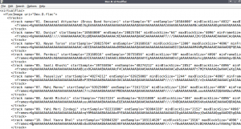
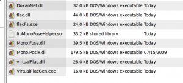
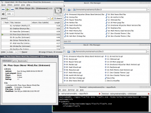

A very substantial part of my audio library consists of cds ripped in the [single flac image + embedded cue sheet] format. All metadata is stored in .apl files—one for each track—which foobar2000 can generate based on the cue sheet. While this is a neat arrangement, the problem with it is that foobar is one of the very few players which can deal with the situation. If I want to access the collection on linux, I have to run foobar under wine. To my knowledge, no native application is capable of playing the tracks.
The problem
There are three main parts to the problem. One, the apl files. These files are "link" files which specify a particular sample range within an audio image and any player that supports Monkey’s Audio should be able to handle them. But from what I have read, while the MA decoder is free and may even be termed as open source, the license agreement is not compatible with GPL. Hence many players on linux (I have tried three or four) don’t use the SDK to support either ape files or apl ones. Those which do use gstreamer don’t play apl files. Two, cue sheets. Not many players support cue sheets either. Three, metadata. The metadata is locked in the apl files along with the track locations and timings. Thus if a player doesn’t support apl, but does support cue sheets, you lose access to metadata. If it doesn’t support cue sheets either, you are left with a huge flac file with no way to identify the contained tracks.
Further, even if some player does meet all these expectations, there will always be "something" that it will miss. For example (and this is only an example—I haven’t thought about how this might work), I want the ability to create "virtual albums." Not play lists, but albums. Many times, older albums are not available, but some songs from them are available in special collections. In other cases, cds come with bonus tracks from other albums, or worse, advertisement tracks! (I have one such cd.) Virtual albums will allow one to use the same track in multiple albums, or use only a part of an album. The same track could have different metadata for different albums. And so on.
One more thing. The fact that the metadata is presently stored in apl files doesn’t mean it has to be stored there for eternity. If there were some platform agnostic way to manage it, the same could also be stored in a database—sqlite, firebird, anything—and be applied to the track when it is played, and carried back when it is changed. Thus, the single most important idea would be that the audio file and metadata management should be independent of any audio/ media player. Note that these are mere musings. As I said I haven’t given much thought to how all this might be implemented. Now to the specific problem. Getting the apl + flac combination playing on linux.
The theory
The problem, one should note again, lies at the player end. Players don’t understand that the single image actually has multiple tracks within it. There are three ways I can think of to attempt a solution. Somehow write a decoder/ plugin for the player of your choice. Or stream the tracks to the player. Or use FUSE. I don’t know if I can do the first (apart from the fact that the solution is player specific), and I don’t even know where to begin as far as the second is concerned. But FUSE has promise. If you are not aware of it, FUSE stands for Filesystem in Userspace. (Read the wiki article, and also try the one on IFS for more information.) In short, while filesystems—FAT, NTFS etc—are generally implemented in the kernel space, as drivers, FUSE allows you to create a fully functional filesystem within a regular application/ service. ntfs-3g on linux, which allows access to NTFS volumes, is a great example. pytagsfs and mp3fs too are fuse-based applications.
Deciding on FUSE is the easy part. FUSE the software, with bindings for many languages including .net (see Mono-Fuse) is available on linux. FUSE the concept also has a few Windows implementations, including one called Dokan. One can thus show the media player files which do not really exist, and it will play them. The question is how to show one flac file as many. It's here that I hit a roadblock. I tried on-the-fly decoding using the flac reference decoder. And the application went crazy with multiple decoding processes starting every time a directory was accessed. Maybe I missed something and it can still be implemented in this way, but I dropped the idea quite soon. The only alternative was creating the file, on-the-fly, as it was being read.
It's here that the need to understand the flac format specification arose. The overview, and the specification on the flac site were helpful when it came to understanding the file structure. But that still didn’t answer the question about the contents of the file. I have no experience when it comes to the technicalities of digital audio. So I didn’t know why some things were happening the way they were. It's here that Brian Langenberger’s "audio formats reference" was extremely useful. And jFLAC which I could observe under a debugger when I faced some problems, and from which I borrowed some utility functions.
FLAC
I will only provide a brief description of the format and then move on to what can be done to tie all of it together. Anyone who is interested should refer to the many links I have provided above. Once you understand the specification, a lot of what follows will make sense. A FLAC file is made up of a header (which is a 4 byte signature), one or more metadata blocks, and one or more frames. The first metadata block is a streaminfo one which contains information on the flac stream. Other blocks follow. The last block is identified by a flag set in the block header (every block has one). And the frames follow after that. Each frame consists of one or more subframes.
A note on audio before I proceed. Consider cd-audio. It is described as being 16-bit stereo audio at 44.1kHz. What does that mean? What it means is that the audio has two channels left and right, and every channel is sampled 44,100 times every second. Further, every sample is stored using 16 bits, or 2 bytes. Thus one second of uncompressed audio of the above description will require 44,100 * 2 (channels) * 2 (bytes) = 176,400 bytes of space. The 44.1 is called the sample rate, and the 16-bit is referred to as the sample size.
Back to flac. Each frame has a "block size" which specifies the number of samples it contains. And each frame has as many subframes as the number of channels. Thus, in the above example, a frame with a blocksize of 4096 will store 4096 samples for channel 0 and another 4096 for channel 1. The encoded data lies in the subframes. A lot of unary encoding takes place and the only way to know the byte size of the frame is by seeking through it to the end.
This is the end of the specification in general. But how does it help us in locating tracks? Every frame has a header (all data structures have one) which contains, among other things, three important pieces of data. First is the blocking strategy. In theory every frame can be of a different size (meaning they can contain a variable number of samples) – a variable strategy can be used. But in practice, all frames except the last one have the same size. The residual data is put in the last frame. This is called a fixed strategy. But make note of the possibility that variable blocking is legal. The second is the frame/ sample number. If the strategy is fixed this field contains a zero-based frame number and is stored as a UTF-8 encoded 32-bit integer; if the strategy followed is variable, the field contains the number of the first sample in the frame, and is stored as a UTF-8 encoded 64-bit integer. The last piece of information is the block size, whatever it is. After all we need to know how many samples exist in the frame.
The idea is this. Given the starting and ending sample numbers of a track, we can locate the first and last frames of the track in the stream. The track will start either at the beginning of a frame (like the first track of a cd) or somewhere in the middle of a frame, and will end similarly (except in case of the last track of the cd where the last sample of the cd is the last sample of the track). A legal track can be extracted from a flac image by writing, at the very least, the stream header, and the streaminfo block updated to the values of the track in question, and a variable first frame which will only contain the samples relevant to the track, and the complete samples of all the frames except the last one, and a variable last frame. Because the specification states that a stream can either be variable or fixed, that is, a variable frame, and a fixed frame cannot legally exist in the same stream, we have to set the "variable" flag on every frame even when the block size is fixed. Further the header of every frame will have to be updated to record the starting sample number of the frame instead of the frame number. Another very important step. The subframes, two of them at least, the fixed one and the lpc one, contain encoded samples. This is no problem when we grab the complete frames. But when we need a frame where the sample we are interested in is located in the middle, that frame will have to be decoded, the data will have to be shifted to the front, and the frame will have to be re-encoded. This process will only have to be done at most once per track. At the end of all this we end up with a perfectly legal track. And we hardly did any encoding or decoding.
In my solution, all of the above is taken care of by the flac module. Before calling its decode function, one must subscribe to the "metadata read" and "before frame read" events. The subscriber can hand in a writable flacstream to any flac structure and the structure will write itself to the stream. It is the subscriber’s responsibility to set the correct values of the variables I mentioned above based on values already read from the input stream, and the samples targeted.
virtualFLAC
I wrote three test functions to verify the accuracy of the flac module. The first one analyzed a supplied flac file, calculating various checksums along the way and checking them against those in the stream. The second one copied a supplied file to another one – one flacstream did the reading, the other did the writing. The third function did what was my intention all the time—extract a track if the starting and ending sample numbers, and a flac image were provided.
But track extraction is a partial solution. If a FUSE application is implemented, we have to deal in offsets, not in samples. The audio player may be seeking to a particular sample, but it is actually issuing a read call to the underlying file system which has to be trapped and the necessary data provided. This is the function of the virtualFlac module. It contains two of the most complex classes in the whole suite. I think I have complicated things more than is necessary. If this part of the process can be implemented more elegantly, I would definitely do it. But I will describe what I have done anyway.
The first class is the VirtualFlacCreator. Given a flac file and an array of starting and ending sample numbers (parsed from apl files in this case), it will create a .virtualflac file, an xml file, which contains general information on every track – its name, size (byte size calculated while the stream is being read) and information required to patch the streaminfo block of a flacstream. Further, each track will contain a list of all the frames over which the track is spread. What this means is that nearly every time, a frame will be listed as the last one of a previous track as well as the first one of the current track. For each frame, its starting offset in the image, its virtual offset when it is part of a single track, and a few other values are recorded. To save space and processing power (I hope), only the track information is stored in human readable form. The frame information is stored in base64-encoded form. The .virtualflac generated at the end of this process can be used in conjunction with its companion flac file to generate one flac file for every track. And that, precisely, is the function of the second class—VirtualFlacTrack (call it VFT).
VirtualFlacTrack takes two arguments—the path to the flac image, and a reference to a VirtualTrack object. I know the names are confusing—I gave them the first names that came to mind— but VirtualTrack is the representation of the track node in the .virtualflac file, basically a dumb structure, whereas VirtualFlacTrack uses the information available in the structure to perform on-the-fly substitutions. VFT exposes exactly one function, a standard filesystem read call which takes a preallocated buffer, an offset and a count as arguments and returns the number of bytes read.
This is the end of the virtualFlac module. While the virtual file system can simply call a VFT object and get data as if it already exists on the disk, as I mentioned above, VFT can also perform another function. If you have xyz.flac and xyz..virtualflac, the following function
private static void WriteTracks(string virtualFlacFile)
{
VirtualTrack [] tracks = VirtualTrack.GetTracks(virtualFlacFile);
foreach(VirtualTrack vt in tracks)
{
string dir = Directory.GetParent(virtualFlacFile).FullName;
string flacImage = Path.Combine(dir, vt.ImageFile);
VirtualFlacTrack ft = new VirtualFlacTrack(flacImage, vt);
FileStream fs = new FileStream(Path.Combine(dir, vt.FileNameWithExt), FileMode.Create);
const int BUFFER_SIZE = 1024 * 128;
byte[] data = new byte[BUFFER_SIZE];
int offset = 0;
while (offset < vt.Size)
{
int read = BUFFER_SIZE;
ft.Read(data, offset, read);
offset += read;
fs.Write(data, 0, read);
fs.Flush();
}
fs.Close();
}
}Putting it all together – flacFS
I said at the beginning that the FUSE application is the easy part. Because the whole project only uses what can be termed as the lowest common denominator when it comes to .net class usage, and is a console application to boot, it is platform agnostic. It references both Dokan as well as Mono-Fuse. At runtime, it detects the environment and uses the fuse implementation applicable to the platform. To avoid writing the same code in both classes—flacDokan and flacFuse—the whole filesystem is implemented in a third class and the Dokan and Fuse classes simply talk to this third class—flacFs, which is implemented like so.
One just has to provide the directory to be mounted and a mountpoint (drive letter in the case of Dokan) and a new volume will appear with virtual flac files on them.
This is how a .virtualflac file looks.

These are the application files involved.

And this one shows the application at work.

A lot remains to be done. For one, metadata support is missing though it should be easy to add, at least the "readonly" part. A vorbis comments metadata block is defined by the flac specification. The application will simply translate between vorbis comments and ape tags or wherever else the metadata is stored. It might even be possible to store it in the virtualflac container. Further, the flac module is brittle because of assumptions regarding the size of the file. And the second Rice partition method is not yet implemented. As for performance, I am not sure how it will work with a few thousand tracks. But I will leave these for another day. The fact that this works is, the pun is very much intended, music to my ears.
{kind=link}
{kind=link}
{kind=link}